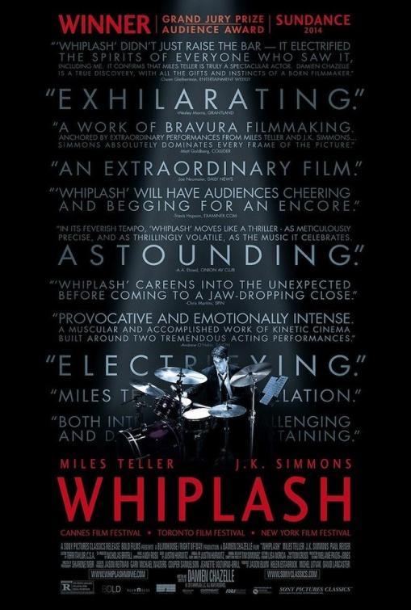

Whiplash
Ficha
- Whiplash
- 2014
- 103 min.
- Estados Unidos
- Damien Chazelle
- Damien Chazelle
- Justin Hurwitz
- Sharone Meir
- Miles Teller, J.K. Simmons, Melissa Benoist, Paul Reiser, Austin Stowell, Jayson Blair, Kavita Patil, Kofi Siriboe, Jesse Mitchel, Michael D. Cohen, Tian Wang, Jocelyn Ayanna, Tarik Lowe, Marcus Henderson, Keenan Henson
- Sony Pictures Classics / Blumhouse Productions / Bold Films / Exile Entertainment / Right of Way Films
- Drama, Música
- El objetivo de Andrew Neiman (Miles Teller), un joven y ambicioso baterista de jazz, es triunfar en el elitista Conservatorio de Música de la Costa Este. Marcado por el fracaso de la carrera literaria de su padre, Andrew alberga sueños de grandeza. Terence Fletcher (J.K. Simmons), un profesor conocido tanto por su talento como por sus rigurosos métodos de enseñanza, dirige el mejor conjunto de jazz del Conservatorio. Cuando Fletcher elige a Andrew para formar parte del grupo, la vida del joven cambiará.
-
Contada podría pasar por una película ya vista. Y sin embargo, algo extraño, por primario, arrastra al espectador hasta lo más profundo del entusiasmo. (...) Y, por favor, no se pierdan la inabordable actuación de J.K. Simmons.
-
Película enfática que oculta, bajo un sentido del espectáculo y un juego de manipulación emocional muy del gusto académico, una loa algo escalofriante (...) con un risible gusto por el subrayado escabroso.
-
Película realmente espléndida y tan musical como dramática (pero, en realidad, un thriller) (...) es impresionante el trabajo que hacen los dos actores protagonistas (...)
-
Perfectamente ejecutada (ritmo, montaje, desarrollo narrativo...), Whiplash merece la visita por este apasionante duelo y, sobre todo, por la furia desencadenada de un Simmons en estado de gracia.